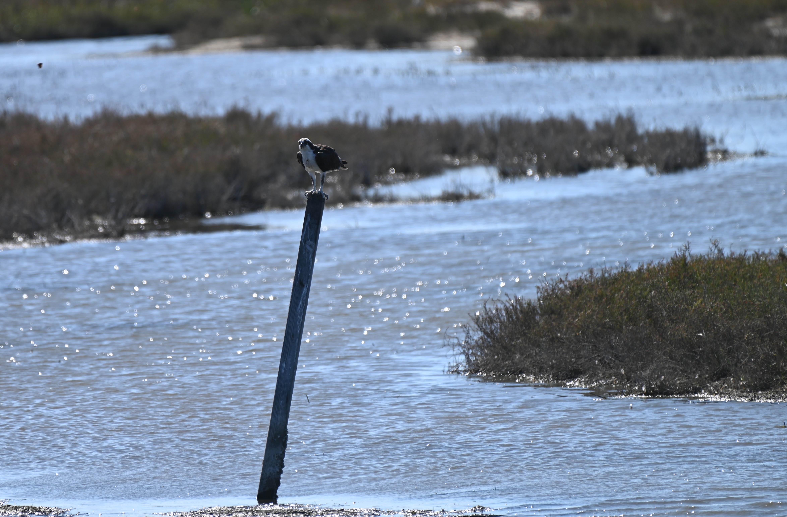
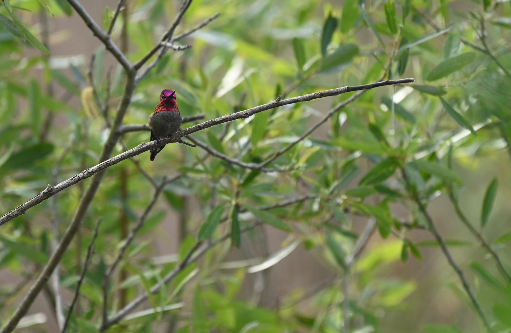

Wildlife of San Diego
Estuaries
Osprey

Description
Ospreys are a type of predatory raptor that primarily hunts fish. They are closely related to hawks, eagles, kites, and vultures. They hunt by diving fully into the water to catch fish, a behavior unique to them among other raptors due to their fully waterproof feathers. You can identify them near bodies of water in San Diego by the distinctive white feathers on their bodies and the dark feathers on their wings and mask. They are one of the most widespread raptors in the world found on every continent other than Antartica
Habitat
Ospreys can be found in San Diego in close proximity to both salt and fresh water. They nest in nearby trees, rocky outcrops, and artificial strucutres like telephone poles. Osprey nests can weigh hundreds of ponds can weigh hundreds of pounds and are composed of primarily branches and assorted vegetation.
Conservation
Ospreys were threatened in the 1900's primarily by hunting and pesticides like DDT but their population has mostly recovered since then. In the modern day ther main threat is habitat loss from the destruction of wetlands like mangroves and estuaries sicne they rely on them primarily for nesting and food
Description
The Anna's Hummingbird is one of the most abundant hummingbirds in the western United States. They can be idnetified by their large size compared to other hummingbirds and the distinctive red scale feathers males display and the darker green and gray feathers femlaes have compared to other hummingbirds. They feed off nectar and insects and can commonly be seen in gardens.
Habitat
Anna's Hummingbirds can be found in most habitats, from chapparel to forests, to mountain to deserts and are not a unique species to the coastal wetlands. Anna's hummingbirds are a commonly seen speicies in neighborhoods due to the number of flowers often found in personal gardens, and often make small nests composed of small plant detritus in tree branches often in low-hanging ones
Conservation
While Anna's hummingbirds have not experienced any sort of notable decline due to personal gardens mainting an ideal habitat for them, the nests they make are fragile and if found in low-hanging branches should not be touched or too closely observed to avoid destroying them or putting undue stress on the parents and chicks
Anna's Hummingbird

American White Pelican

Description
The American White Pelican is one of of our two pelicans found in both San Diego and the US as a whole, the other being the Brown Pelican. Brown Pelican is more commonly found in San Diego, while American White Pelican is harder to find. The pelican photo here was taken in San Elijo estuary during the morning. The American White Pelican doesn't hunt at sea and in San Diego, it prefer to hunt during the morning and if succesful moves further back inland to settle in during the day, making the mronign the ideal time to try to photograph them
Habitat
The American White pelican usally hunts fish within secluded bays, eastuaries, and rivers during the mronings and sometimes the afternoon. They build loose nests out fo rocks, sticks, and whatever else is available in depressions on river banks and sand bars. They nest mainly around some of San Diego's lakes, you can see them there with the ducks and coots sometimes.
Conservation
The American White Pelican is relatively secure though they faced a larger decline in population in San Diego and are still recovering. Within San Diego they mainly face threats from loss of wetland habitat where they hunt.
Description
The Southern Pacific Rattlesnake is one San Diego's mlst interesting local snakes. While they are relatively common throughout the county, they massively differ in hunting strategy and looks depending where they are found. They actively change color depdending on mood and habitat. Within San Diego, while the coastal variations tend to be just brown like in the picture, you can find ones among large fields that take on a minty green color and several populations within the mountains are a stark black, among many other color variations. Different populations carry entirely different types of venom, one prevents bloodcotting and attakcs the muscle tissue and the other attacks neurons. They usually make for farily calm photography subjects though they do get scared easily and run off. If ones is angry though, you can easily tell by the rattling so give it some space and you'll be fine.
Habitat
The Southern Pacific rattlesnake is found throughout the county, though the one pictured was found in an estuary. They tend to hunt western fence lizards while juveniles, our most common lizard in the county, you'll see it eveywhere on rocks and side walks. When they grow up though they usually hunt mice, rats, rabbits, and ground squirrels. The one in eastuary was most likely huntign grond squirrels and possibly some of the birds that call the estuary home. They tend to be a common backyard critter too during summer and spring.
Conservation
The primary threats the Southern Pacific Rattlesnake faces are killing and habitat loss. Within San Diego, while this has improved in recent years, for a long while people would jsut decapitate them with shovels whenever they were found in backyards instead of relocating them, as they were viewed as threats towards pets and children. The development of coastal chapparel and grassland in San Diego has also greatly reduced their hunting grounds and homes. Calling wildife and snake relocation programs when they are found on property with children and dogs along with undergoing snake training for dogs is an easy and humane way to mitigate the threat of them. Many of these services are done for free by volunteers and are a worthwhile way to protect this amazing local species.
Southern Pacific Rattlesnake